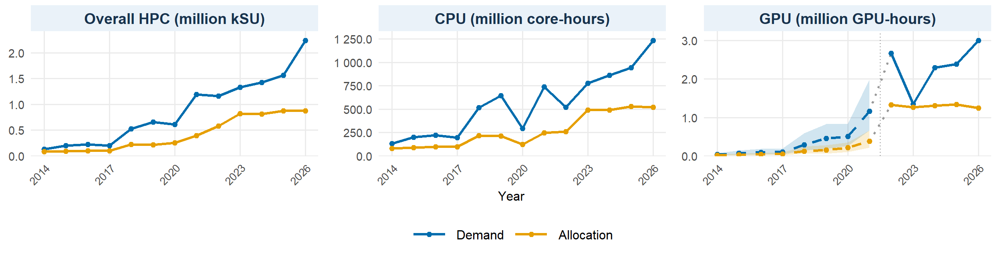
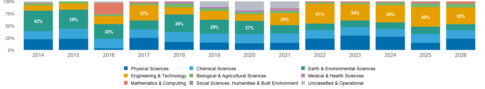
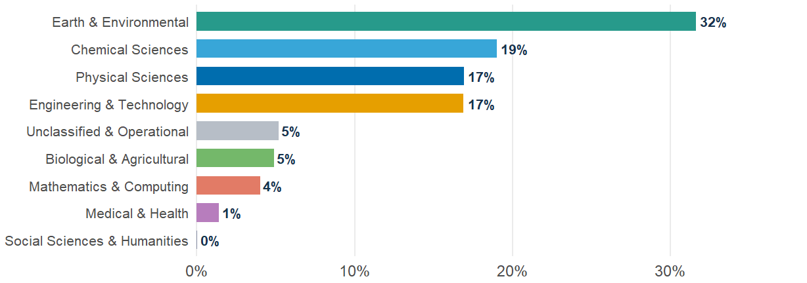
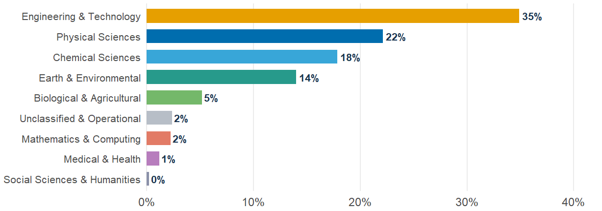
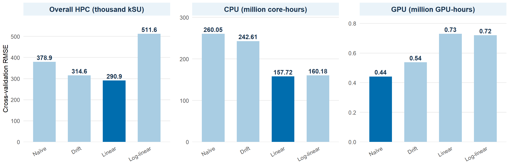
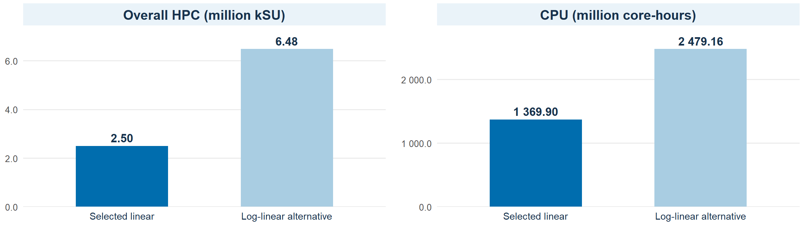

Australian HPC Demand to 2030
15 October 2026
What is Supercomputing (HPC)?
High-performance computing (HPC) uses many processors working together to solve complex problems, run simulations, and analyse large datasets at a scale that ordinary computers cannot easily achieve.
What makes it different? Supercomputers combine thousands of CPU cores, often supported by GPUs, to perform calculations in parallel.
Research applications: Climate modelling, weather forecasting, drug discovery, and engineering simulations.
Understanding Researcher Demand
Important: Historical demand is not always directly observed. Some values are estimated using allocations or proxies, so the forecasts represent planning scenarios rather than exact predictions.
Research question
How is demand for Australia’s national research supercomputing infrastructure projected to evolve through 2030?
Project objectives
Planning purpose
Provide evidence-informed demand projections to support long-term planning for Australia’s national research computing infrastructure.
Source: (Australian Academy of Science 2026). Project scope and methodology were refined based on data availability, coverage, and comparability.
Three Key Measurements
Historical Comparability
Key takeaway: Historical resource measures are not automatically comparable. This project harmonises them using documented conversion assumptions.
Sources: (National Computational Infrastructure 2025, 2020; National Computational Merit Allocation Scheme 2026). Conversion assumptions and limitations: project data harmonisation methodology.
Primary Data Sources
Historical Analytical Coverage
Data limitation: Historical series combine reported observations, derived estimates, and proxies. Data availability and comparability vary across facilities and years.
Sources: (National Computational Infrastructure 2014, 2021; Pawsey Supercomputing Research Centre 2017; National Computational Merit Allocation Scheme 2026). Coverage and harmonisation: this project’s data preparation methodology.
| Measure | 2014 | 2015 | 2016 | 2017 | 2018 | 2019 | 2020 | 2021 | 2022 | 2023 | 2024 | 2025 | 2026 |
|---|---|---|---|---|---|---|---|---|---|---|---|---|---|
| Demand | Direct | Derived | Derived | Proxy | Derived |
Derived proxy |
Derived proxy |
Derived proxy |
Derived proxy |
Direct |
Derived proxy |
Derived proxy |
Direct |
| Allocation | Direct | Direct | Direct | Proxy | Direct | Proxy | Direct | Direct | Direct | Direct | Direct | Direct | Direct* |
Direct
Observed value directly reported by the source.
Derived
Calculated from reported values.
Proxy
Approximated using alternative measures.
Derived proxy
Estimated from proxy relationships or assumptions.
*2026 allocation excludes 12,000 kSU awarded to Setonix Q to match the published demand scope. Facility coverage also varies across historical years.
What does this mean?
Main limitations
Key takeaway: Historical demand contains more estimated values than allocation. Forecasts should therefore be interpreted as planning scenarios, subject to historical measurement uncertainty.
Sources: (National Computational Infrastructure 2014, 2021; National Computational Merit Allocation Scheme 2023, 2026). Provenance classifications: project data harmonisation.

Overall HPC
Reconstructed demand rose 43.3% in 2026; official NCMAS growth was approximately 24%.
Allocation remained near 0.87 million kSU, widening the demand–allocation gap.
CPU
Demand increased sharply after 2020, reaching approximately 1.25 billion core-hours in 2026.
Allocation remained near 530 million core-hours, indicating a widening resource gap.
GPU
Demand reached approximately 3.0 million GPU-hours in 2026, more than twice allocation.
2014 - 2021: Historical scenarios. 2022 - 2026: Mixed reported and estimated data.
Notes: GPU dashed lines and shaded bands for 2014 - 2021 represent assumption-based historical scenarios, not statistical confidence intervals. Historical values include reported and estimated data. The 2025 HPC demand estimate affects the reconstructed 2026 growth rate. The 2026 overall HPC allocation excludes 12,000 kSU awarded to Setonix Q. Panel units and scales differ.
Sources: (National Computational Merit Allocation Scheme 2026; National Computational Infrastructure 2025). Historical series and GPU scenarios: project data harmonisation.
2014–2026 | Annual allocation composition

2014–2020 | Average annual share (FoR 2008-based)

2021–2026 | Average annual share (FoR 2020-based)

Key insight: Allocation leadership shifted from Earth & Environmental Sciences ( 32% average, 2014–2020) to Engineering & Technology ( 35% average, 2021–2026).
Notes: Allocation shares, not observed demand. The upper chart shows annual composition; lower charts rank average annual shares using FoR 2008- and FoR 2020-based mappings. The 2017 Pawsey reporting scope differs. Groupings are not official one-to-one ANZSRC conversions.
Sources: NCI and Pawsey historical allocation reports (National Computational Infrastructure 2014, 2021; National Computational Merit Allocation Scheme 2023, 2026). FoR percentages and period averages: project data harmonisation and analysis.
Model rationale: The annual demand series contain 13 observations for HPC and CPU (2014 to 2026) and 5 observations for GPU (2022 to 2026). Linear and log-linear regression models were fitted to compare absolute and proportional growth assumptions using a limited number of observations.
Linear trend: Absolute growth
D_t = \alpha + \beta t + \varepsilon_t
Estimates the absolute annual change in demand. This provides a direct measure of additional computing resources required each year.
Log-linear trend: Proportional growth
\log(D_t) = \alpha + \beta t + \varepsilon_t
Estimates proportional annual growth. This allows demand to increase at a compounded rate rather than by a fixed amount.
Sensitivity analysis: Influence of 2026
The reconstructed demand increases sharply in 2026. To assess whether this observation substantially influences the estimated growth rate, linear models were fitted both including and excluding 2026.
| Resource | Excluding 2026 | Including 2026 | Change |
|---|---|---|---|
| Overall HPC | 144,357 kSU/year | 161,992 kSU/year | +12.2% |
| CPU | 72.41M core-hours/year | 81.01M core-hours/year | +11.9% |
| GPU | 0.012M GPU-hours/year | 0.172M GPU-hours/year | Highly sensitive |
Including 2026 increases the estimated annual linear growth by approximately 12% for HPC and CPU. GPU estimates are more sensitive because only five years of suitable data are available.
Field of Research (FoR): Historical allocation shares were used to develop research field scenarios. Separate demand regression models were not fitted because directly observed FoR demand data are unavailable.
Notes: GPU modelling uses data from 2022 to 2026 and excludes the assumption-based historical scenarios from 2014 to 2021. Sensitivity measures changes in fitted coefficients, not forecast accuracy. Model evaluation follows in Chapter 8.
Evaluation approach: Four models were compared using expanding-window, one-step-ahead cross-validation: naïve, drift, linear and log-linear. Accuracy was measured using RMSE and MAE on the original demand scale.

Linear achieved the lowest RMSE of 290,898 kSU and MAE of 198,295 kSU.
Evaluated over six years, 2021 to 2026.
Linear had the lowest RMSE at 157.72 million core-hours.
Log-linear had the lowest MAE at 133.74 million core-hours.
Naïve had the lowest RMSE at 0.441 million GPU-hours.
Only two evaluation years, 2025 and 2026, limit confidence in the ranking.
Key finding: Linear trends performed best on RMSE for overall HPC and CPU, while the naïve benchmark performed best for GPU. Model selection must also consider data limitations, sensitivity to 2026 and suitability for forecasting through 2030.
Notes: RMSE is shown in thousand kSU for overall HPC and million hours for CPU and GPU. Panel scales differ. Overall HPC and CPU use six one-step-ahead errors; GPU uses two. Cross-validation accuracy does not establish long-term forecast reliability. Source: Project model evaluation, Chapter 8.
Selection approach: Models were assessed using cross-validation accuracy, sensitivity to 2026, growth assumptions and data reliability.
Selected forecasting approaches
Overall HPC: Linear trend
Lowest RMSE and MAE across six evaluation years, with interpretable annual growth.
CPU: Linear trend
Lowest RMSE and competitive MAE. Avoids assuming sustained compound growth through 2030.
GPU: Naïve benchmark
Lowest RMSE and MAE, but based on only two evaluation years. Longer-term trend projections remain exploratory.
Field of Research: Allocation-share scenarios
Historical allocation shares inform research-field scenarios because directly observed FoR demand is unavailable.
Residual diagnostics for selected linear models
Overall HPC
Ljung-Box test (lag 2): p = 0.8775
No significant autocorrelation detected. The 2026 residual and Q-Q tail departures warrant caution.
CPU
Ljung-Box test (lag 2): p = 0.3608
No significant autocorrelation detected. Some large residuals and Q-Q departures remain.
Neither test detected significant residual autocorrelation, but the short historical series limits confidence in the diagnostic conclusions.
Notes: Residual diagnostics were conducted for the selected HPC and CPU linear models. Non-significant Ljung-Box results do not establish residual independence. GPU projections remain exploratory. Sources: Project model selection and scenario forecasting analyses, Chapters 9 and 10.
Forecast approach: Linear models provide the selected central projections for 2030. Log-linear models show how the results change under compounded growth assumptions.

Overall HPC
2.50 million kSU
Selected 2030 projection.
Growth from 2026: +11.6%
95% prediction interval: 1.98 to 3.03 million kSU.
CPU
1,369.90 million core-hours
Selected 2030 projection.
Growth from 2026: +10.9%
95% prediction interval: 974.24 to 1,765.55 million core-hours.
Forecast implication: Linear models provide the preferred central projections. Log-linear models produce substantially higher estimates, showing how strongly the 2030 outlook depends on the assumed growth pattern.
Notes: Growth is calculated relative to the historical 2026 demand estimates. Prediction intervals are conditional on the selected linear models and do not capture all sources of uncertainty. Log-linear projections are alternative scenarios, not upper prediction bounds. Panel scales differ. Source: Project scenario forecasting analysis, Chapter 10.
Scenario approach: GPU projections compare alternative growth assumptions using 2022 to 2026 data. Research field scenarios distribute the selected 2030 HPC demand projection using historical allocation shares.
GPU demand in 2030
Million GPU-hours, by forecasting assumption
The naïve model had the lowest short-term forecast error, but evaluation covered only two years. The differences between scenarios make a single central GPU forecast difficult to justify.
Field of Research demand scenarios
2030 projection based on 2.50 million kSU total HPC demand
Including 2026, the exploratory trend models project 12% to 23% growth in GPU demand by 2030, relative to 2026. However, only two evaluation years were available, limiting forecast reliability.
Planning implication: GPU requirements vary substantially across growth assumptions. Research field demand scenarios also change depending on which historical allocation period is used.
Notes: GPU projections are exploratory, not statistical prediction intervals. The naïve model holds estimated 2026 demand constant. FoR figures are conditional scenarios calculated using the rounded 2.50 million kSU HPC forecast and 2021 to 2026 allocation shares. They are not independently forecast demand. Only four research fields are displayed; other fields account for the remaining allocation share. A third FoR scenario uses 2014 to 2026 shares. Source: Project scenario forecasting analysis, Chapter 10.